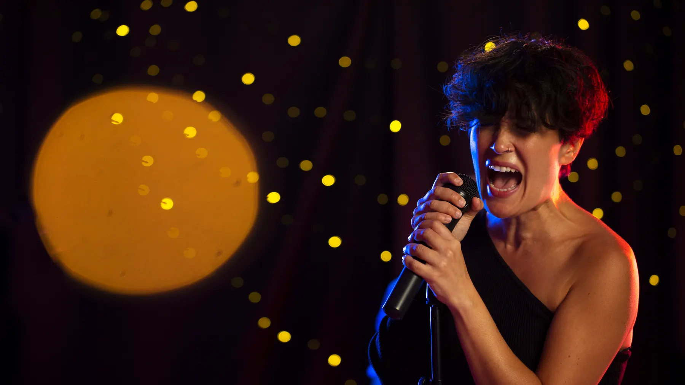

לוגו
הפקת אירועים ופסטיבלים
אתם נהנים מהערב. אנחנו דואגים לכל השאר
במה, סאונד, בר ואבטחה מספק אחד. מאה עשרים אירועים בשנה, מחתונה בחצר ועד פסטיבל של שלושה ימים.

טקסט בצד אחד, ובצד השני שתי עמודות של תמונות שגולשות לאט ובלי סוף, אחת למעלה ואחת למטה. הקצוות נמוגים, ריחוף עוצר את התנועה, ויש כפתור עצירה גלוי.
מתי משתמשים: עסק שיש לו הרבה צילומים טובים ולא צילום אחד מוביל: הפקת אירועים, צלם, מסעדה, חנות, סטודיו, קייטרינג. מראה כמות ואיכות בבת אחת. לא כשיש פחות משש תמונות, כי החזרה בולטת.
הדמו כאן עיצובי-ניטרלי בכוונה. כשהמהלך נכנס לפרויקט, מיובאת רק ההתנהגות: הצבעים, הרדיוסים, הפונטים והצללים יורשים את העיצוב של אותו פרויקט.
במה, סאונד, בר ואבטחה מספק אחד. מאה עשרים אירועים בשנה, מחתונה בחצר ועד פסטיבל של שלושה ימים.

הקוד כאן עומד בפני עצמו. כל טוקן עיצוב נושא ברירת מחדל, מחלקות העזר של המאגר מוטמעות בו, ותגי הסקריפט מסודרים לפי הסדר הנכון. פרויקט שמגדיר --accent או --line משלו יורש אותם אוטומטית. הרכיב הזה מסתמך על dir="rtl".
/* H14 · הירו עם עמודות תמונות שזזות */
/* ---- demo frame and top row (scaffolding, not part of the hero) ---- */
.hf{position:relative;margin-inline:var(--gutter, clamp(24px, 5vw, 96px));border:1px solid var(--line, #e4e4ee);border-radius:var(--r, 14px);overflow:hidden;background:var(--bg, #f7f7fa);isolation:isolate}
.hf-top{position:absolute;inset-inline:0;top:0;z-index:6;display:flex;align-items:center;gap:24px;padding:20px 28px;font-size:15px;font-weight:500}
.hf-top b{font-size:18px;font-weight:800}
.hf-top nav{display:flex;gap:18px;margin-inline-start:auto;opacity:.8}
@media (max-width:760px){.hf-top nav{display:none}}
.hbtn{display:inline-flex;align-items:center;justify-content:center;min-height:52px;padding:0 28px;border-radius:12px;background:var(--accent, #4a3aff);color:var(--accent-ink, #fff);text-decoration:none;
font-size:16px;font-weight:600;white-space:nowrap;transition:transform .18s cubic-bezier(.2,.6,.2,1),box-shadow .3s cubic-bezier(.2,.6,.2,1)}
.hbtn.ghost{background:none;color:inherit;box-shadow:inset 0 0 0 1.5px currentColor}
@media (hover:hover) and (pointer:fine){.hbtn:hover{transform:translateY(-2px)}}
.hkick{font-size:14px;font-weight:600;letter-spacing:.02em;opacity:.75}
.hlead{margin:0;font-size:clamp(17px,1.2vw,20px);line-height:1.55;opacity:.82}
.hmicro{display:flex;flex-wrap:wrap;gap:8px 18px;font-size:14px;opacity:.7}
.hcta{display:flex;flex-wrap:wrap;gap:12px}
/* the resting state is the visible one. opacity:1 on .rv also keeps the no-JS look identical to the look after the entrance */
.rv{opacity:1;transition:opacity .5s cubic-bezier(.2,.6,.2,1),transform .5s cubic-bezier(.2,.6,.2,1)}
.open-anim .rv{opacity:0;transform:translateY(18px);animation:rv-fs 0s 2.5s forwards}
/* --t0: on a page with a header, 0.2s so the header comes down first (motion.md 2) */
.is-in .rv{opacity:1;transform:none;transition-duration:.7s;transition-delay:calc(var(--t0,0s) + var(--i,0) * 90ms)}
.rv-on .rv{animation:none}
@keyframes rv-fs{to{opacity:1;transform:none}}
@media (prefers-reduced-motion:reduce){.rv,.is-in .rv{transition-duration:.01ms!important;transition-delay:0s!important}
.hbtn{transition-duration:.01ms!important}.hbtn:hover{transform:none!important}}
.hpp{width:44px;height:44px;flex:none;border:0;border-radius:999px;display:grid;place-items:center;cursor:pointer;
background:color-mix(in srgb,var(--ink, #16182b) 55%,transparent);color:var(--bg, #f7f7fa);-webkit-backdrop-filter:blur(8px);backdrop-filter:blur(8px);transition:background .18s cubic-bezier(.2,.6,.2,1)}
.hpp svg{width:18px;height:18px;fill:none;stroke:currentColor;stroke-width:2.2;stroke-linecap:round;stroke-linejoin:round}
.hpp .i-play{display:none;fill:currentColor}
.hpp[aria-pressed="true"] .i-pause{display:none}
.hpp[aria-pressed="true"] .i-play{display:block}
.hpp:focus-visible{outline:2px solid var(--accent, #4a3aff);outline-offset:3px}
@media (hover:hover) and (pointer:fine){.hpp:hover{background:color-mix(in srgb,var(--ink, #16182b) 75%,transparent)}}
.h14h{position:relative;display:grid;grid-template-columns:1fr 1fr;gap:48px;height:min(84vh,760px);min-height:560px;padding-inline:28px;background:var(--bg, #f7f7fa);overflow:hidden}
.h14-txt{display:flex;flex-direction:column;justify-content:center;align-items:flex-start;gap:24px;padding-block:112px 56px}
.h14h h3{margin:0;max-width:13ch;font-size:clamp(34px,min(4.4vw,7.8vh),72px);line-height:1.03;font-weight:700;letter-spacing:-.01em;text-wrap:balance}
.h14h .hlead{max-width:40ch}
/* the edges fade (mask), so a photo never starts or ends with a hard cut */
.h14-vis{position:relative;display:grid;grid-template-columns:1fr 1fr;gap:16px;overflow:hidden;
-webkit-mask-image:linear-gradient(to bottom,transparent 64px,#000 168px,#000 86%,transparent);mask-image:linear-gradient(to bottom,transparent 64px,#000 168px,#000 86%,transparent)}
.h14-col{display:flex;flex-direction:column;gap:16px;animation:h14up 44s linear infinite}
.h14-col.dn{animation-name:h14dn;animation-duration:52s}
.h14-col img{width:100%;aspect-ratio:4/5;object-fit:cover;border-radius:14px;display:block}
/* the list is written twice: moving by half of it (plus half a gap) lands on the same picture, so the loop has no seam */
@keyframes h14up{to{transform:translateY(calc(-50% - 8px))}}
@keyframes h14dn{from{transform:translateY(calc(-50% - 8px))}to{transform:none}}
.h14h.paused .h14-col{animation-play-state:paused}
@media (hover:hover) and (pointer:fine){.h14-vis:hover .h14-col{animation-play-state:paused}}
.h14h .hpp{position:absolute;inset-block-end:20px;inset-inline-end:20px;z-index:2}
@media (prefers-reduced-motion:reduce){.h14-col{animation:none}.h14h .hpp{display:none}}
/* phone: the text first, the two columns as a band below it */
@media (max-width:860px){.h14h{grid-template-columns:1fr;grid-template-rows:auto minmax(200px,1fr);gap:8px;height:min(94vh,800px);min-height:0;padding-inline:20px}
.h14-txt{padding-block:88px 8px;gap:18px}
.h14-vis{gap:10px;-webkit-mask-image:linear-gradient(to bottom,transparent,#000 18%,#000 82%,transparent);mask-image:linear-gradient(to bottom,transparent,#000 18%,#000 82%,transparent)}.h14-col{gap:10px}}<script>if(matchMedia("(prefers-reduced-motion:no-preference)").matches)document.documentElement.classList.add("open-anim")</script>
<div class="hf"><div class="hf-top"><b>לוגו</b><nav><span>שירותים</span><span>פרויקטים</span><span>אודות</span></nav></div>
<section class="h14h" id="h14">
<div class="h14-txt">
<span class="hkick rv">הפקת אירועים ופסטיבלים</span>
<h3 class="rv">אתם נהנים מהערב. אנחנו דואגים לכל השאר</h3>
<p class="hlead rv">במה, סאונד, בר ואבטחה מספק אחד. מאה עשרים אירועים בשנה, מחתונה בחצר ועד פסטיבל של שלושה ימים.</p>
<div class="hcta rv"><a class="hbtn" href="#h14">לקבלת הצעה לאירוע</a><a class="hbtn ghost" href="#h14">אירועים שהפקנו</a></div>
</div>
<div class="h14-vis rv" aria-label="צילומים מאירועים שהפקנו" role="img">
<div class="h14-col"><img src="https://liavwebdesign-spec.github.io/motion-vault/assets/media/real/s06/dancers.webp" alt="" aria-hidden="true" fetchpriority="high" decoding="async"><img src="https://liavwebdesign-spec.github.io/motion-vault/assets/media/real/s06/food.webp" alt="" aria-hidden="true" decoding="async"><img src="https://liavwebdesign-spec.github.io/motion-vault/assets/media/real/s06/singer.webp" alt="" aria-hidden="true" decoding="async"><img src="https://liavwebdesign-spec.github.io/motion-vault/assets/media/real/s12/hero-window.webp" alt="" aria-hidden="true" decoding="async"><img src="https://liavwebdesign-spec.github.io/motion-vault/assets/media/real/s06/dancers.webp" alt="" aria-hidden="true" decoding="async"><img src="https://liavwebdesign-spec.github.io/motion-vault/assets/media/real/s06/food.webp" alt="" aria-hidden="true" decoding="async"><img src="https://liavwebdesign-spec.github.io/motion-vault/assets/media/real/s06/singer.webp" alt="" aria-hidden="true" decoding="async"><img src="https://liavwebdesign-spec.github.io/motion-vault/assets/media/real/s12/hero-window.webp" alt="" aria-hidden="true" decoding="async"></div>
<div class="h14-col dn"><img src="https://liavwebdesign-spec.github.io/motion-vault/assets/media/real/s06/hug.webp" alt="" aria-hidden="true" decoding="async"><img src="https://liavwebdesign-spec.github.io/motion-vault/assets/media/real/s15/pour.webp" alt="" aria-hidden="true" decoding="async"><img src="https://liavwebdesign-spec.github.io/motion-vault/assets/media/real/s06/hands.webp" alt="" aria-hidden="true" decoding="async"><img src="https://liavwebdesign-spec.github.io/motion-vault/assets/media/real/s12/dusk-camp.webp" alt="" aria-hidden="true" decoding="async"><img src="https://liavwebdesign-spec.github.io/motion-vault/assets/media/real/s06/hug.webp" alt="" aria-hidden="true" decoding="async"><img src="https://liavwebdesign-spec.github.io/motion-vault/assets/media/real/s15/pour.webp" alt="" aria-hidden="true" decoding="async"><img src="https://liavwebdesign-spec.github.io/motion-vault/assets/media/real/s06/hands.webp" alt="" aria-hidden="true" decoding="async"><img src="https://liavwebdesign-spec.github.io/motion-vault/assets/media/real/s12/dusk-camp.webp" alt="" aria-hidden="true" decoding="async"></div>
</div>
<button class="hpp" type="button" aria-pressed="false" aria-label="עצירת התמונות הזזות"><svg class="i-pause" viewBox="0 0 24 24" aria-hidden="true"><path d="M9 6v12M15 6v12"/></svg><svg class="i-play" viewBox="0 0 24 24" aria-hidden="true"><path d="M8 5.5v13l10.5-6.5z"/></svg></button>
</section>
</div>// in view = fire. Measured directly on scroll and resize, not through IntersectionObserver:
// an observer does not update while the tab is throttled (and on a real site the hero is usually
// on screen at load anyway), and an entrance that never fires leaves the hero invisible.
function inView(el,f){
var ro;
function chk(){
var r=el.getBoundingClientRect();
if(r.top<innerHeight*.9&&r.bottom>0){off();f();}
}
function off(){removeEventListener("scroll",chk);removeEventListener("resize",chk);if(ro)ro.disconnect();}
addEventListener("scroll",chk,{passive:true}); addEventListener("resize",chk);
// a layout change with no scroll (a bar above it closes, a font swaps in) can also bring it into view
if(window.ResizeObserver){ro=new ResizeObserver(chk);ro.observe(document.body);}
requestAnimationFrame(chk); setTimeout(chk,300);
}
function enter(root){
var els=root.querySelectorAll(".rv");
els.forEach(function(el,i){if(!el.style.getPropertyValue("--i"))el.style.setProperty("--i",i);});
// a script that ran late, after the 2.5s CSS failsafe already showed the hero: keep it shown, no second entrance
if(els.length&&getComputedStyle(els[0]).opacity==="1")root.classList.add("is-in");
root.classList.add("rv-on");
inView(root,function(){root.classList.add("is-in");});
}
(function(){
var root=document.getElementById("h14"), pp=root.querySelector(".hpp"); enter(root);
pp.addEventListener("click",function(){var on=!root.classList.contains("paused");root.classList.toggle("paused",on);pp.setAttribute("aria-pressed",String(on));
pp.setAttribute("aria-label",on?"הפעלת התמונות הזזות":"עצירת התמונות הזזות");});
})();